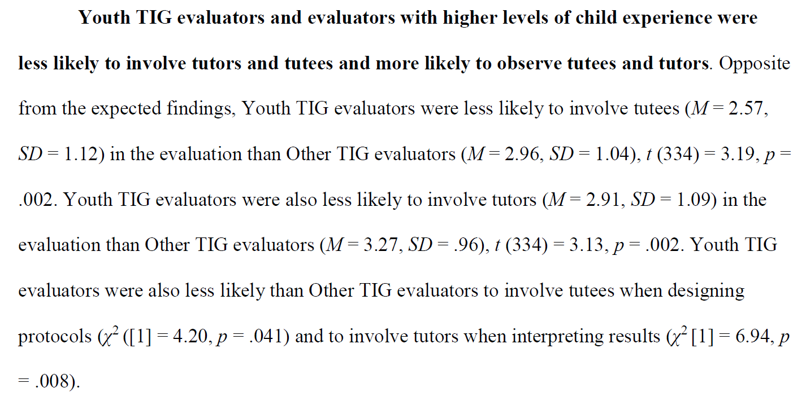
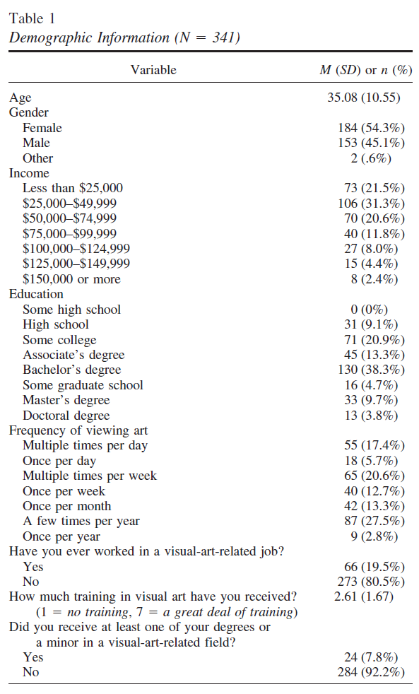

Describing data
As a reminder, descriptive statistics are used to summarize, organize, and overall describe our sample data.
Data variables
First, it’s important to understand the different types of variables in jamovi and how they map onto our levels of measurement.
Variables in jamovi can be one of three data types:
- Integer, meaning the values are discrete whole numbers
- Decimal, meaning the values are numbers with decimals
- Text, meaning the values are alphanumeric, not just numeric
Furthermore, variables in jamovi can be one of four measure types:
 Nominal
NominalOrdinal
Continuous (meaning jamovi combines interval and ratio and doesn’t distinguish between the two)
ID (used for any identifying variable you likely wouldn’t ever analyze, like participant ID number or name)
There are a few great things about jamovi when it comes to these data variables. First, jamovi will try to automatically determine what the data and measure types are when you type in data or when you open a dataset; this is fabulous, until it goes wrong. It’s important that you always double check your data and measure types first!
Second, those little icons will be really helpful to let you know what variables can go in which boxes. For example, we would never analyze a nominal variable as our dependent variable for a t-test, and jamovi will help remind you of that. When performing an independent samples t-test, the dependent variables box will have a little ruler icon indicating you should be putting continuous variables in that box. Similarly, it will tell you to put nominal or ordinal variables in the grouping variable (independent variable) box. Sweet!
Describing your data
We explore our data partly to describe our data and partly to check our data before performing inferential statistics. jamovi puts all our descriptive statistics into one useful analysis under the Exploration tab called Descriptives.
Describing nominal or ordinal data
Nominal and ordinal data is described mainly using frequencies. Choose your variable and move it to the Variables box and then select the option Frequency tables. Note that it tells you it’s best for nominal and ordinal data with the two icons!
Describing continuous data
In the Descriptives analysis, these are under the Statistics drop-down menu. There are a ton of possible options!
- Sample size: you can ask for the sample size (
N) and number of missing values (Missing) - Percentile values: these are useful for creating quartiles (
Cut points for 4 equal groups) orPercentilesof various sizes. - Dispersion: you should already be familiar with most of the measures of dispersion, particularly the
MinimumandMaximum, but there is also theStd. deviation(SD) andVariance(which is just SD2). We’ll learn about theS. E. Meanlater. - Central Tendency: similarly, you should also be familiar with all of the measures of central tendency:
Mean,Median,Mode, andSum. - Distribution: you should also be familiar with both
SkewnessandKurtosisand later we will learn what those values mean and how that helps us test for normality - Normality: lastly, there is a statistical test for normality called the
Shapiro-Wilktest that we will learn about later.
Describing one variable split by another variable
Sometimes we want to get the descriptive statistics for one variable across multiple groups of another variable. Usually, this is a continuous variable split by a categorical variable. In that case, move your continuous variable to the Varables box and the variable you want split by categories in to the Split by box.
Writing up descriptive statistics
We’ll learn more about writing up our inferential statistics results later, but first let’s learn how we might report our descriptive statistics.
In small examples, we might write-up our descriptive statistics into a paragraph1 (note that there is also an independent t-test and a chi-square test of independence!):

In examples with many variables, we might write-up our descriptive statistics into a table2:
